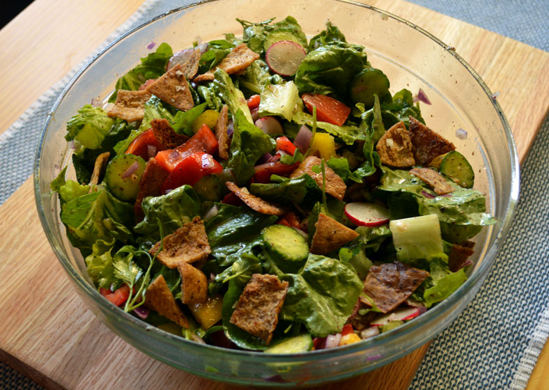

Home
The Simplest Fattoush Recipe Ever!

Whip up a healthy salad in like five minutes come on man that's too easy.
Here are the ingredients you need
- Romaine Lettuce
- Cherry Tomatoes
- Olives
- Olive Oil
- Pomegranate Molases
- Sumak
- Pink Salt / Sea Salt
- Pepper
- Croutons
You can add more greens and vegetables like Broccoli or spinach but that's up to you.
Steps
- Clean and chop your lettuce into strips.
- Chop your tomatoes into halves or quarters. (Optional but I like pan frying them first)
- In a bowl add a tablespoon of olive oil and molases. Mix well.
- Add your tomatoes, lettuce, olives and croutons into the bowl
- Add a healthy amount of pepper, salt and sumak. (Sumak gives it that unique flavour)
- Mix well then finally add your croutons.
- Plate that shi and you got yourself some fine Fattoush!